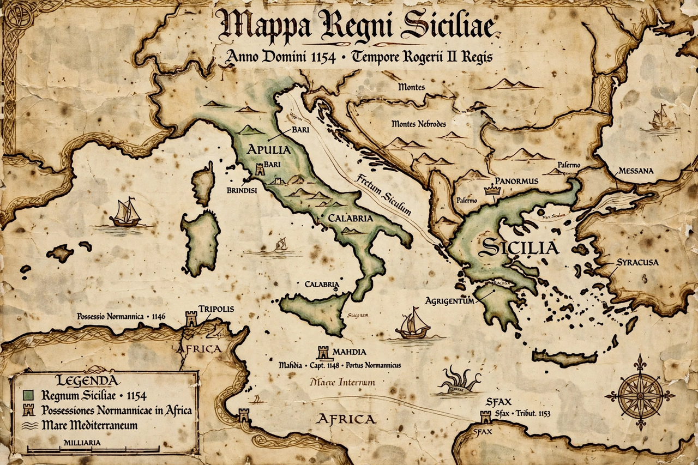

From Wikipedia, the free encyclopedia
| Kingdom of Sicily | |
|---|---|
| Existence | 1130–1816 |
| Capital | Palermo |
| Common languages | Sicilian, Latin, Greek, Arabic, Norman French |
| First king | Roger II |
The Kingdom of Sicily (Italian: Regno di Sicilia, Sicilian: Regnu di Sicilia) was a state that existed in the south of the Italian Peninsula and for a time in Northern Africa from its founding by Roger II in 1130 until 1816. It succeeded the County of Sicily, created in 1071 during the Norman conquest, and at its height encompassed the island of Sicily, Calabria, Apulia, and at times parts of the central Italian coast and North Africa.

The Hauteville family, led by Roger I, conquered Muslim Sicily between 1061 and 1091. His son Roger II united the Norman territories in southern Italy and was crowned King of Sicily on Christmas Day 1130. The Norman court at Palermo was famous for its synthesis of Norman, Byzantine and Arab culture — "the king who baptised pagans anew", in the contemporary phrase — with monuments like the Palatine Chapel and Monreale Cathedral.
Through the marriage of Constance of Sicily to Henry VI, the kingdom passed to the Hohenstaufen; their son Frederick II made Palermo a brilliant cultural centre. Papal opposition brought in Charles of Anjou in 1266; the Sicilian Vespers revolt of 1282 and the subsequent war transferred the island to the Crown of Aragon, splitting the kingdom into an island "Sicily" and a mainland one centred on Naples.
The island kingdom passed between Aragonese, Spanish Habsburg, Savoyard and Austrian rulers before returning to a Bourbon cadet branch; in 1816 Ferdinand IV merged Sicily and Naples into the Kingdom of the Two Sicilies.
See also: Roger II of Sicily, Robert Guiscard, Kingdom of the Two Sicilies.